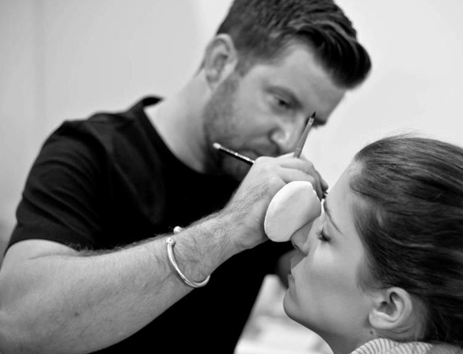

資料來源： marie claire
稍稍對四大城市時裝週有概念的人都知道，後台如戰場，分秒必爭！歌劇魅影Kryolan首席彩妝師Paul Merchant就曾在短短兩小時內一手包辦15位model的全妝，效率之驚人絕不是我們所能想像，而今天他要來告訴大家10分鐘戰鬥妝的小秘訣，這對經驗豐富的他而言，其實只是一塊「小蛋糕」！但手拙如我們，卻能從中學習不少，現在就請Paul親身計時示範如何快速化出立體感的完美妝容吧～
這套戰鬥妝不僅快速，Paul還貼心地將所需的彩妝品減低到最少，替我們省時又省錢。實際上，在後台化妝時必須相當懂得利用時間，因此多數彩妝師會重複使用彩妝品，反而不會執著在它的單一用途上，例如用粉底液刷出自然感腮紅、霧面眼影化出眉毛等，這樣不為人知的小秘訣在日常生活裡也十分受用喔。
深知許多女性為光澤底妝著迷的Paul首先教了我們一招密技，將打亮放在所有彩妝的前面，沒錯！就是放在底妝的最前面，先利用撫平毛孔的primer穩定膚況，而這款內有光澤粒子的 primer可以讓我們更節省時間，一般使用者可以藉由手心的溫度，將任何乳霜狀產品加溫，快速地上在需要打亮的部位，包含T字和額頭，以及眼下。（防曬的步驟放在打亮和底妝中間）
接著同樣利用指尖的溫度上底妝（Paul在為我們示範時，採用刷具上妝最主要是由於衛生習慣的考量），其實手指就是很好用的刷具了！Paul老師相當注重底妝的層次和輪廓感，因此會混用不同色調的粉底液做出效果，並選用深一色的粉底液在臉的四周做出明暗，如此在視覺上，可使得眼睛更跳出來，這個小技巧相當推薦給喜歡大眼妝效的亞洲女性。
化腮紅最容易失敗的地方就是位置選錯了！Paul老師告訴我們最正確的腮紅位置：是在蘋果肌的上方一點，先打圓之後再輕刷往上拉到太陽穴後方（也就是俗稱的C字部位）。這樣的化法同樣可以強調眼睛，同是讓臉部看起來氣色更佳、心情更愉悅。
相較於東方人，西方彩妝師更喜歡選用霧面的眼影產品，其中一個原因是可以「一物多用」！Paul老師這次不僅要告訴我們最快速的上妝方法，也要告訴我們如何用最少的產品達到完美妝效，他選擇了中間色的眼影直接來做修容，直接斜刷在顴骨下方，就是最簡單的修容化法。
不同於我們平常化妝的習慣，後台專業彩妝師更計較於妝容的立體感，因此他們會利用像是粉底液、修容等方式來製造出在臉部的明暗、陰影效果。這也是Paul老師看到亞洲女性在妝容上比較忽略的一塊。
先用上述提到的暖色系淺色眼影打底並帶到眉毛下方，Paul在這邊強調，「眼妝絕不能髒！此時打底就成為很重要的步驟，不然很容易讓整體妝的質感降低」，和東方女性不同的是，西方人相當注重眼窩，做出眼窩可以增加眼妝的立體感。
另外又和一個東方人不同的習慣，Paul並不使用眼線液化出眼線，反而是利用深色眼影餅和眼線刷勾勒眼線，最後在眼尾處，用剩餘的眼影粉稍做暈染，如此就可創造出自然又柔和的妝容。依據Paul Merchant在時裝秀後台和藝術領域征戰多年的經驗，他認為，「一般女性在上妝時，有時候失敗之處就在於妝感太過銳利。」
唇妝其實只要選擇自己喜愛的顏色就可以，不過Paul在這邊又提供了一個小技巧，彩妝師為了強調妝容一致性時，經常利用同一支唇膏做出唇妝和頰彩，所以我們也可以將脣膏當作霜狀的腮紅膏喔～完全是小資女孩的福音呀。
而在最後的最後，Paul Merchant告訴我們他不是第一次來到台灣，來自倫敦的他也發現台灣的天氣相當溼熱，所以女性經常都有出油的困擾，尤其是眼妝出油會更加可怕，他建議油性肌膚或是油眼皮的女孩，可用HD micro primer加強眼尾和眼下這種易出油的部位，在完妝時刷上少量的透明蜜粉，如此可以延長妝效！
